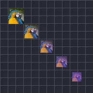

Lineaire herhaling

Maakt dynamisch meerdere kopieën van de laag, gerangschikt langs een lijn.
Instellingen
| Instelling | Type | Bereik | Standaard |
|---|---|---|---|
| Aantal | Getal | 0 tot 150 | 5 |
| Positie | Punt (X, Y) | -99999 tot 99999 | 500, 0 |
| Bereikpositie | Punt (X, Y) | -99999 tot 99999 | 0, 0 |
| Bereikschaal | Getal | 0 tot 10 | 1 |
| Bereikrotatie | Hoek | -3600° tot 3600° | 0° |
| Bereikdekking | Getal | 0% tot 100% | 100% |
| Vulkleur | Kleur | – | #FFFFFF |
| Hoeveelheid vulling | Getal | 0% tot 100% | 0% |
| Bereikbegin | Getal | 0% tot 100% | 0% |
| Bereikeinde | Getal | 0% tot 100% | 100% |
| Bereikverschuiving | Getal | -1000% tot 1000% | 0% |
| Easing | Keuze | Lineair, Ease-in, Ease-out, Ease-in-out | Lineair |
| Willekeurige volgorde | Aan of uit | – | Uit |
| Seed | Getal | 0 tot 9999 | 0 |
| Vertraging per kopie | Getal | -60 s tot 60 s | 0 s |
| Willekeurige positie | Punt (X, Y) | 0 tot 99999 | 0, 0 |
| Willekeurige rotatie | Hoek | 0° tot 3600° | 0° |
| Willekeurige schaal | Getal | 0% tot 1000% | 0% |
| Willekeurige dekking | Getal | 0% tot 100% | 0% |
| Stijl | Keuze | Klassiek, Standaard | Standaard |